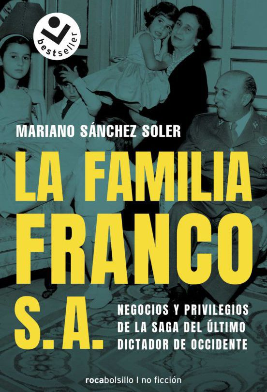

LA FAMILIA FRANCO S.A.
La familia Franco S.A
Resumen
La familia Franco S. A. es la última y más completa investigación sobre el entorno familiar del general Franco.La familia Franco S.A. es un trayecto financiero-personal que abarca desde que se forjó la familia, a principios del siglo XX, hasta la España democrática de 2019. Este libro de investigación relata con rigor el aspecto más desconocido de la historia del clan Franco: los negocios secretos, el modo en que amasaron su fortuna partido del simple sueldo del general, el holding empresarial forjado alrededor de El Pardo, los oscuros manejos de los testaferros, los escándalos profesionales, la caza furtiva .
En 2019, la saga familiar de quien fue el hombre más poderoso de España ha perdido su brillo social de antaño, pero ha adquirido una gran notoriedad política y jurídica por su oposición a la exhumación de los restos de Franco del Valle de los Caídos. La muerte de Carmen Franco ha destapado el origen y los avatares de la fortuna familiar, amasada en plena dictadura y consolidada en democracia.
Vídeo:
Autor(a):
Sánchez Soler (Alicante, 1954) es escritor, periodista y profesor. Doctor por la Universidad de Alicante, es Licenciado en Ciencias de la Información por la UCM. Ha ejercido el periodismo desde 1979 y ha desarrollado una intensa labor como escritor con más de veinte libros. Su última novela, Nuestra propia sangre, obtuvo el premio Francisco García Pavón de Narrativa 2009.
Ficha técnica
Libros relacionados ...